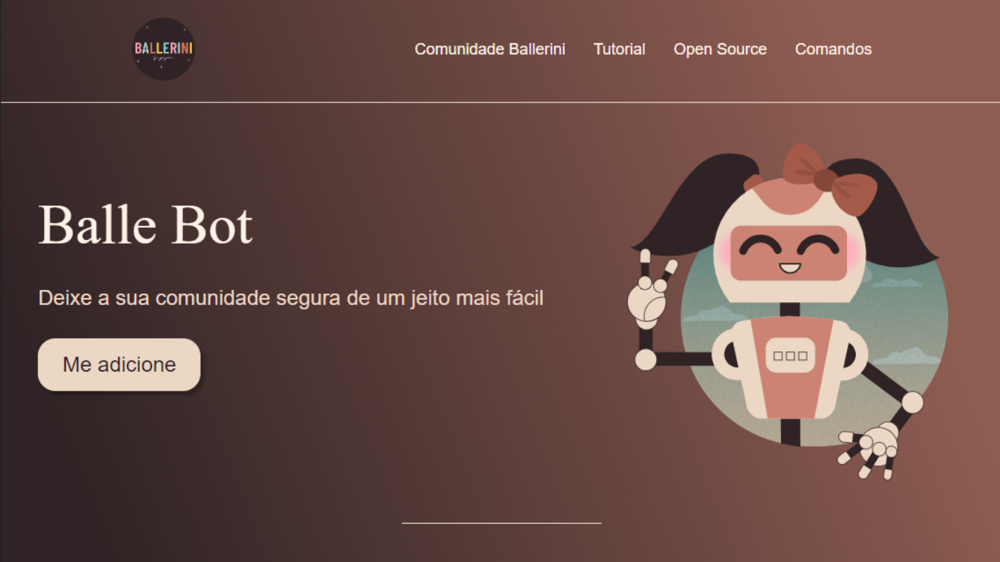
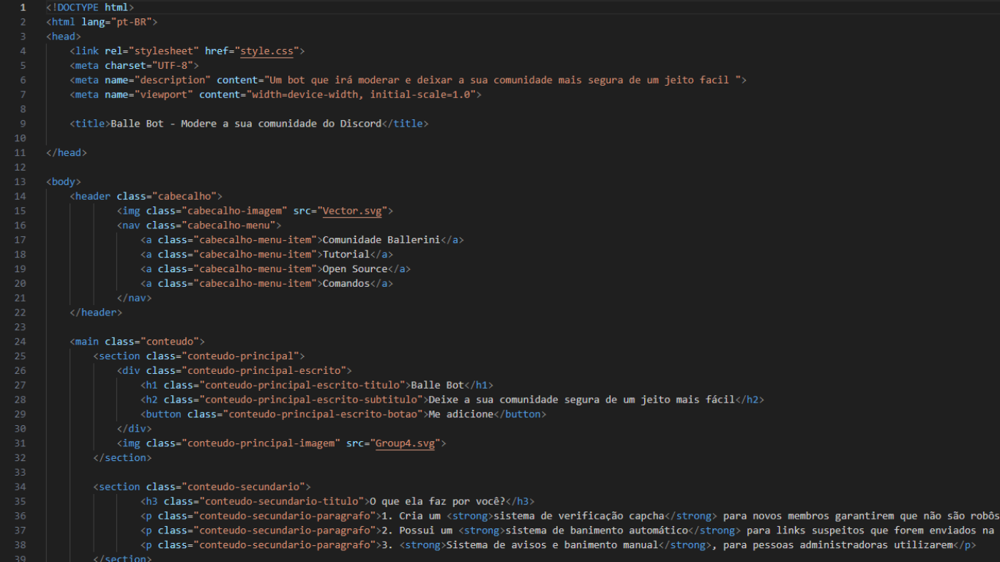
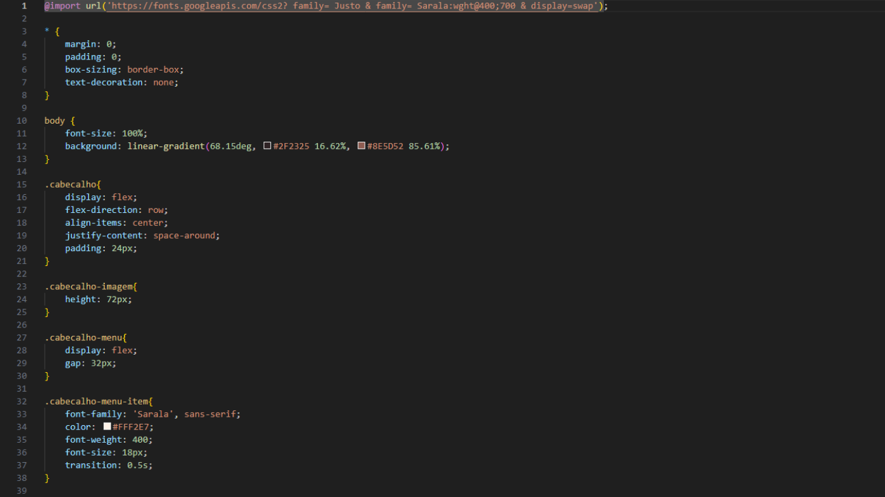

Finalidade do Projeto
A Balle Bot foi um projeto desenvolvido pelo YouTube, esse é um site utilizado para exibir um produto, que é a própria Balle Bot, sua ideia é mostrar as principais funcinalidades do produto e dar a possibilidade de você conhecê-lo.
Tecnologias Utilizadas
Para a criação do site da Balle Bot, foi necessário apenas o design. Para a parte design de componentes foi utilizado o Figma, para que fosse possível deixar alinhado todos os elementos e onde eles serião colocados, já na parte do design Web, foi utilizado HTML e CSS, para estilização dos componentes e interatividade com alguns elementos do site.
Considerações Finais
Com o resultado final, o projeto contribuiu com meu aprendizado de design para a Web, e fortaleceu meu conhecimento de estilização e estruturação de site. Servindo de inspiração para outros layouts criados.